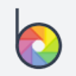

Н
НейроХолстГенерация изображений
«НейроХолст» готовит визуальные материалы по заданию.
Раздел «Для художников»: варианты ИИ для этой задачи, описания возможностей и переходы к обзорам. Сравните несколько решений на одинаковом примере.
Разработайте визуальный набросок пейзажа перед собственной художественной работой. Опишите главный мотив и соотношение крупных пятен; используйте результат для обсуждения композиции, проверяя, помогает ли выбранный свет направлять внимание к основному объекту.
Нарисуй композиционный набросок старого причала в тумане: одна лодка на переднем плане, дальний берег едва виден. Ограниченная серо-синяя палитра, крупные световые пятна, без мелкой декоративной детализации.

«НейроХолст» готовит визуальные материалы по заданию.
«ai drawing generator» представлен в разделе «Генерация изображений». При выборе проверьте нужную операцию и условия работы с результатом.
«AIChatGPTImage» работает с графическими задачами дизайна.
«Crypko AI» представлен в разделе «Генерация изображений». При выборе проверьте нужную операцию и условия работы с результатом.
Flush AI предлагает облачную творческую среду с генеративными моделями для изображений и письменных задач. В исходном описании также отмечено улучшение визуального материала. Перед выбором режима выясните, какая операция доступна для вашего исходника, и сравните обработанный фрагмент с оригиналом по деталям, которые требуется сохранить.
Для «iDrawAi» сначала определите свою задачу и требуемый результат. Карточка относится к направлению «Генерация изображений».
«IMGtopia» готовит визуальные материалы по заданию.
«mst AI» готовит визуальные материалы по заданию.
«Synthetik» представлен в разделе «Арт». При выборе проверьте нужную операцию и условия работы с результатом.
Vieutopia предлагает создание визуальных работ в разных художественных направлениях, среди которых абстракция, фэнтези, поп-арт и импрессионизм. Для задания определите главный объект и назначение иллюстрации. Сравните несколько вариантов по композиции и узнаваемости деталей, а не только по стилистическому эффекту; выбор оформления должен поддерживать смысл материала.
«Waifulabs» создаёт портретные и аватарные изображения.
«Wirestock» представлен в разделе «Генерация изображений». При выборе проверьте нужную операцию и условия работы с результатом.
«Zmo Anime Generator» готовит визуальные материалы по заданию.
«AICartoonGenerator» представлен в разделе «Арт». При выборе проверьте нужную операцию и условия работы с результатом.
Artguru используют, чтобы собирать видеосцену по описанию или визуальному исходнику. Ещё одно направление работы: менять фотографии с учётом выбранного оформления.
«Dall-E 3 (openai.com)» готовит визуальные материалы по заданию.
«Drawmeasheep» готовит визуальные материалы по заданию.
Dream Up создаёт художественные изображения с помощью ИИ и позволяет выбирать стилевое направление. Пользователь может настраивать текстовые подсказки и увеличивать изображение. Средства контроля использования ИИ дополняют творческую работу, связывая первоначальный запрос с выбором подачи и дальнейшей подготовкой полученного визуального материала для собственного проекта.
Сравнивать «Imagine Studios Ai» с другими инструментами раздела «Создание контента» удобнее на одинаковом исходном материале.
Для «Immersity AI» сначала определите свою задачу и требуемый результат. Карточка относится к направлению «Генерация изображений».
Сравнивать «InstantArt» с другими инструментами раздела «Генерация изображений» удобнее на одинаковом исходном материале.
«M00D Ritual» готовит визуальные материалы по заданию.
Сравнивать «Metaphysic» с другими инструментами раздела «Генерация изображений» удобнее на одинаковом исходном материале.
«Neuralarts» готовит визуальные материалы по заданию.
«NewArc AI» готовит визуальные материалы по заданию.

OpenArt предоставляет ИИ-инструменты для создания изображений и их дальнейшего изменения. Продукт ориентирован в том числе на художественные ресурсы, которые автор может редактировать. Генерация и обработка объединены, чтобы пользователь продолжал работу над выбранным визуальным материалом в пределах инструмента.
Seek art объединяет создание искусства средствами ИИ с участием художников. В описании предусмотрена торговая площадка, где можно покупать произведения, подготовленные по индивидуальному запросу. Продукт связывает визуальное творчество с заказом художественного материала, сочетая цифровой инструмент и работу людей в одном окружении.
«Shakker AI» готовит визуальные материалы по заданию.
«Thisnightskydoesnotexist» представлен в разделе «Генерация изображений». При выборе проверьте нужную операцию и условия работы с результатом.
«Unstable Diffusion» готовит визуальные материалы по заданию.
Для «Vanity AI» сначала определите свою задачу и требуемый результат. Карточка относится к направлению «Видео».
«Vector to 3D» работает с векторной графикой.
Для «Airbrush (airbrush.ai)» сначала определите свою задачу и требуемый результат. Карточка относится к направлению «Генерация изображений».
«Al art academy» работает с графическими задачами дизайна.

Civitai объединяет материалы сообщества для визуальной генерации. Перед применением в проекте стоит изучить назначение модели и условия использования результата.
«Disney Pixar Image Generator» представлен в разделе «Генерация изображений». При выборе проверьте нужную операцию и условия работы с результатом.
«Luminar AI» помогает исправлять и оформлять фотографии.
«Mixxer» готовит визуальные материалы по заданию.
«NEX» готовит визуальные материалы по заданию.
Для «NQRT» сначала определите свою задачу и требуемый результат. Карточка относится к направлению «Генерация изображений».
«Pirate Diffusion» готовит визуальные материалы по заданию. «Pirate Diffusion» создаёт портретные и аватарные изображения.
«Salvador - DALL-E3 UI» готовит визуальные материалы по заданию.

StarryAI создаёт изображения из текстового описания с участием ИИ. Пользователь задаёт замысел словами и настраивает полученный визуальный вариант. Приложение представлено для мобильных устройств на iOS и Android, позволяя работать над художественным изображением в выбранной среде своего телефона.
«Thiswaifudoesnotexist» готовит визуальные материалы в аниме-оформлении.
«Zazow» готовит визуальные материалы по заданию.
«AI Photo Wizard» готовит визуальные материалы по заданию.
«ArtBot» готовит визуальные материалы по заданию.

«Befunky» помогает исправлять и оформлять фотографии.
Страница 2 из 5